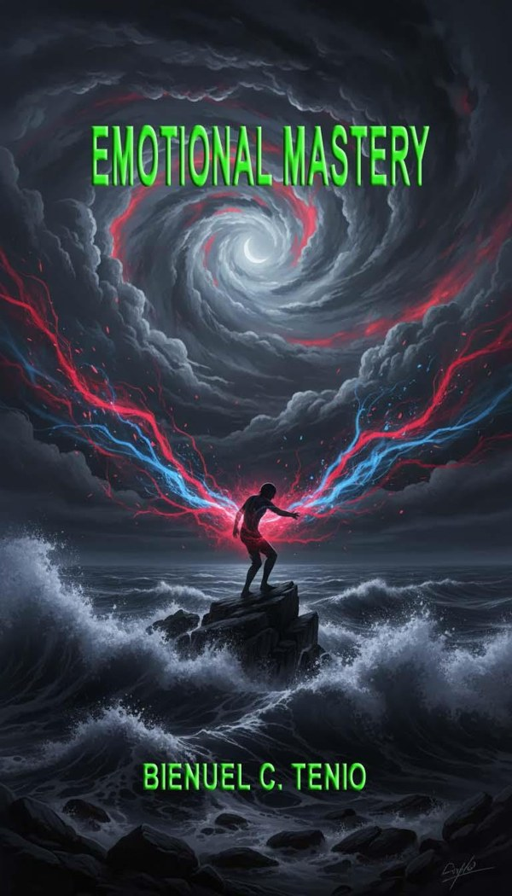
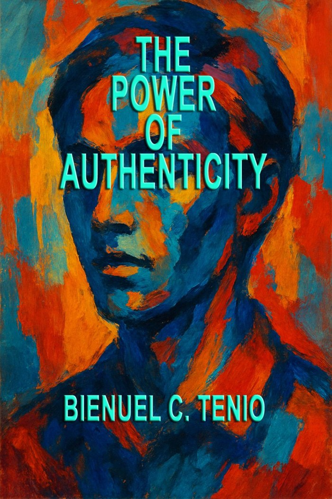

THE PERSONAL DEVELOPMENT COLLECTION
A little more clarity.
A deeper way to grow.
Nine books on understanding yourself, caring for your inner life, and connecting more meaningfully with others.
Discover the nine books ↓BY BIENUEL C. TENIO
YOUR NEXT CHAPTER
Explore the collection
Begin with the subject that speaks to you.
Each book offers its own path into reflection.
01 / Purpose & growth
A thoughtful exploration of intention, purpose, and meaningful living. Discover how self-exploration, personal values, and authentic connections can shape a life of steady, deliberate growth.
Explore this book ↗02 / Awareness & clarity
An invitation to understand the thoughts, emotions, and patterns that shape your life. Explore blind spots, personal values, and the everyday practices that make more conscious choices possible.
Explore this book ↗
03 / Emotions & balance
Explore how to recognize, name, and respond to emotions with greater care. This guide connects emotional awareness with perspective, self-regulation, empathy, and values-led action.
Explore this book ↗04 / Understanding & relationships
Bring emotional intelligence into everyday life through self-awareness, self-management, social awareness, and relationship skills. A reflective guide to applying these capacities at home, at work, and through adversity.
Explore this book ↗
05 / Empathy & boundaries
A grounded exploration of empathy, sensitivity, and healthy boundaries. Reflect on caring deeply while protecting your capacity, recognizing emotional overload, and building more reciprocal relationships.
Explore this book ↗
06 / Courage & renewal
A reflective companion for navigating setbacks and uncertainty. Explore resilience through perspective, emotional awareness, daily choices, and the relationships that help sustain you through difficult seasons.
Explore this book ↗07 / Well-being & awareness
Explore the relationship between inner experience, bodily awareness, and daily habits. This book brings together reflection on personal development, emotional regulation, movement, and lifestyle.
Explore this book ↗
08 / Identity & integrity
Examine the distance between outward expectations and inward values. Explore self-awareness, vulnerability, courage, and the practice of expressing yourself with greater honesty and integrity.
Explore this book ↗
09 / Listening & connection
Explore communication as a practice of understanding and connection. Reflect on the barriers that distort meaning, the role of context, and the habits that support clearer, more thoughtful conversations.
Explore this book ↗AT YOUR OWN PACE
Growth begins with a moment of attention.
Choose a book. Make room for a question. Carry one thoughtful idea into your day.
Find your starting point ↑